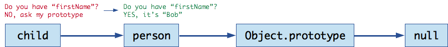

# JavaScript Prototypes Learn about prototypal inheritance in JavaScript. **You will need** * [Google Chrome][chrome] (recommended, any browser with developer tools will do) **Recommended reading** * [JavaScript][subject-js] --- class: center, middle ## Prototypal inheritance .breadcrumbs[<a href="#1">JavaScript Prototypes</a>] > JavaScript is a little different than class-based languages like Java or C++ when it comes to **inheritance**. > In JavaScript, the only constructs when it comes to inheritance are **objects**. > **Objects Inherit From Other Objects** > While this is often considered to be one of JavaScript's weaknesses, > the prototypal inheritance model itself is, in fact, **more powerful than the classic model**. > It is, for example, fairly trivial to build a classic model on top of a prototypal model. --- ### The prototype chain .breadcrumbs[<a href="#1">JavaScript Prototypes</a> > <a href="#2">Prototypal inheritance</a>] <codepen></codepen> Each object has a **private property** which holds a **link to another object** called its **prototype**. That prototype object has a prototype of its own, and so on until an object is reached with null as its prototype. By definition, **null has no prototype**, and acts as the **final link in this prototype chain**. ```js let o = {}; console.log(o.__proto__); // {} console.log(o.__proto__.__proto__); // null console.log(Object.getPrototypeOf(o)); // {} console.log(Object.getPrototypeOf(Object.getPrototypeOf(o))); // null ``` Nearly all objects in JavaScript are instances of [**`Object`**][js-object] which sits on the **top of a prototype chain**: ```js let o = {}; console.log(Object.getPrototypeOf(o) === Object.prototype); // true ``` When trying to **access a property** of an object, the property will not only be sought **on the object** but **also on the prototype of the object**, the prototype of the prototype, and so on until either a property with a matching name is found or the end of the prototype chain is reached. --- ### Creating plain JavaScript objects .breadcrumbs[<a href="#1">JavaScript Prototypes</a> > <a href="#2">Prototypal inheritance</a>] <codepen></codepen> There are **3 ways to create objects** in JavaScript. The first way is to create a **plain or literal object** with curly braces, like so: ```js const person = `{ firstName: 'Bob', lastName: 'Page' }`; console.log(`person.firstName`); // "Bob" console.log(`person.foo`); // undefined // The prototype of "person" is "Object.prototype". let prototypeOfPerson = Object.getPrototypeOf(person); console.log(`prototypeOfPerson === Object.prototype`); // true // "Object.prototype" is the top of the inheritance chain. Its prototype is null. let prototypeOfObject = Object.getPrototypeOf(Object.prototype); console.log(prototypeOfObject === null); // true ``` <p class='center'><img src='images/plain-object-prototype.png' /></p> Note that when we tried to access `foo`, a property that doesn't exist on `person` or on `Object.prototype`, we got `undefined`. --- ### Creating objects with `Object.create` .breadcrumbs[<a href="#1">JavaScript Prototypes</a> > <a href="#2">Prototypal inheritance</a>] <codepen></codepen> The **second way to create objects** is using [**`Object.create`**][js-object-create], which creates a new object **with the specified prototype**. This means that our new object, instead of having `Object.prototype` as its prototype, will have the object we passed to `Object.create` as its prototype: ```js const person = { firstName: 'Bob', lastName: 'Page' }; // Create an object with a prototype. const child = `Object.create(person)`; // The prototype of "child" is "person". let prototypeOfChild = Object.getPrototypeOf(child); console.log(`prototypeOfChild === person`); // true // The prototype of "person" is "Object.prototype". let prototypeOfPerson = Object.getPrototypeOf(person); console.log(prototypeOfPerson === Object.prototype); // true ``` <p class='center'><img src='images/object-create-prototype.png' /></p> --- #### Accessing properties in a prototype chain (part 1) .breadcrumbs[<a href="#1">JavaScript Prototypes</a> > <a href="#2">Prototypal inheritance</a> > <a href="#5">Creating objects with `Object.create`</a>] <codepen></codepen> But what can we do with that object? ```js const person = { firstName: 'Bob', lastName: 'Page' }; // Create an object with a prototype. const child = Object.create(person); `child.age` = 12; console.log(`child.age`); // 12 console.log(child.firstName); // "Bob" console.log(child.foo); // undefined ``` This is what happens when you access `child.age`: <p class='center'><img src='images/prototype-chain-1.png' /></p> Obviously, we can retrieve that property since we just added it to `child`. --- #### Accessing properties in a prototype chain (part 2) .breadcrumbs[<a href="#1">JavaScript Prototypes</a> > <a href="#2">Prototypal inheritance</a> > <a href="#5">Creating objects with `Object.create`</a>] <codepen></codepen> But what can we do with that object? ```js const person = { `firstName`: 'Bob', lastName: 'Page' }; // Create an object with a prototype. const child = Object.create(person); child.age = 12; console.log(child.age); // 12 console.log(`child.firstName`); // "Bob" console.log(child.foo); // undefined ``` This is what happens when you access `child.firstName`: <p class='center'></p> `child` doesn't have a `firstName` property, so JavaScript will move on to **the next object in the prototype chain**, and check if that object has it. Since `person` is the prototype of `child`, and it has a `firstName` property, we get its value. --- #### Accessing properties in a prototype chain (part 3) .breadcrumbs[<a href="#1">JavaScript Prototypes</a> > <a href="#2">Prototypal inheritance</a> > <a href="#5">Creating objects with `Object.create`</a>] <codepen></codepen> But what can we do with that object? ```js const person = { firstName: 'Bob', lastName: 'Page' }; // Create an object with a prototype. const child = Object.create(person); child.age = 12; console.log(child.age); // 12 console.log(child.firstName); // "Bob" console.log(`child.foo`); // undefined ``` This is what happens when you access `child.foo`: <p class='center'><img src='images/prototype-chain-3.png' /></p> In this case, neither `child`, `person` nor `Object.prototype` have a property called `foo`, so after moving all the way up the prototype chain and having found no matching property, JavaScript returns `undefined`. --- #### Overwriting a parent prototype's property .breadcrumbs[<a href="#1">JavaScript Prototypes</a> > <a href="#2">Prototypal inheritance</a> > <a href="#5">Creating objects with `Object.create`</a>] <codepen></codepen> What happens if you add a property with the same name to the `child` object? ```js const person = { firstName: 'Bob', `lastName`: 'Page' }; // Create an object with a prototype. const child = Object.create(person); `child.firstName` = 'Megan'; console.log(`child.firstName`); // "Megan" console.log(`child.lastName`); // "Page" ``` When you access `child.firstName`, it returns its own property: <p class='center'><img src='images/prototype-chain-overwrite.png' /></p> When you access `child.lastName`, it returns its prototype's property: <p class='center'><img src='images/prototype-chain-overwrite-2.png' /></p> --- ### Creating objects with a constructor function .breadcrumbs[<a href="#1">JavaScript Prototypes</a> > <a href="#2">Prototypal inheritance</a>] <codepen></codepen> ```js function Person(first, last) { this.first = first; this.last = last; } // Check that our function has an associated prototype object. console.log(typeof(Person.prototype)); // "object" // Create an object by calling the function as a constructor. `const child = new Person`('Bob', 'Page'); let prototypeOfChild = Object.getPrototypeOf(child); console.log(`prototypeOfChild === Person.prototype`); // true let prototypeOfPerson = Object.getPrototypeOf(Person.prototype); console.log(prototypeOfPerson === Object.prototype); // true ``` <p class='center'><img src='images/constructor-prototype.png' /></p> **Every function has an associated prototype object** which you can access by its `prototype` property. When you use that function **as a constructor with `new`**, the prototype of the created object will be the function's prototype object. --- ### What does this mean? .breadcrumbs[<a href="#1">JavaScript Prototypes</a> > <a href="#2">Prototypal inheritance</a>] Let's combine two of the important things we just learned: .grid-70[ * When **accessing a property** that doesn't exist on an object, JavaScript will **look up the prototype chain** and attempt to find it on the object's prototype, the prototype's prototype, and so on. * When **creating an object by calling a constructor function**, the prototype of the created object will be the **function's associated prototype object**. ] .grid-30[ <p class='center'> <img src='images/wait-what.jpg' /> Wait, what? </p> ] .container[ This means that **if we attach things to a function's prototype object**, these things will be **available on any object constructed with that function**. ] --- ## Implementing a class-like structure with prototypes .breadcrumbs[<a href="#1">JavaScript Prototypes</a>] <codepen></codepen> Welcome to your first *JavaScript-class-without-a-class*: ```js // Define a "class". function Person(first, last) { this.first = first; this.last = last; } // Add a "method" to the "class". Person.prototype.getFullName = function() { return \`${this.first} ${this.last}`; }; // Construct an object. const person = new Person('Bob', 'Page'); // Access properties like before. console.log(person.first); // "Bob" // Call a method. console.log(person.getFullName()); // "Bob Page" ``` <p class='center'><img src='images/prototype-chain-function.png' /></p> --- ### The value of `this` .breadcrumbs[<a href="#1">JavaScript Prototypes</a> > <a href="#12">Implementing a class-like structure with prototypes</a>] <codepen></codepen> Note that **when calling a function on an object**, the keyword **`this`** always refers to **the object the function was called on**. .grid-50[ ```js const o = { value: 24, getValue: function() { return `this`.value } }; console.log(`o`.getValue()); // 24 ``` ] .grid-50[ ```js function Foo() { `this`.value = 42; } Foo.prototype.getValue = function() { return `this`.value; }; const `o` = new Foo(); console.log(`o`.getValue()); // 42 ``` ] .container[ By the way, it's best to use the second structure rather than the first. Why? Because in the first example, a **new function** will be created every time you create an object this way. In the second example, only one `getValue` function is defined and attached to the prototype, and it's **reused** for every object that's an instance of `Foo`. ] --- ## Resources .breadcrumbs[<a href="#1">JavaScript Prototypes</a>] **Documentation** * [`Object`][js-object] * [`Object.create`][js-object-create] * [`this`][js-this] * [Inheritance and the prototype chain](https://developer.mozilla.org/en-US/docs/Web/JavaScript/Inheritance_and_the_prototype_chain) **Further reading** * [A Plain English Guide to JavaScript Prototypes](http://sporto.github.io/blog/2013/02/22/a-plain-english-guide-to-javascript-prototypes/) * [Prototypes in JavaScript](https://hackernoon.com/prototypes-in-javascript-5bba2990e04b) * [Understanding Prototypes and Inheritance in JavaScript](https://www.digitalocean.com/community/tutorials/understanding-prototypes-and-inheritance-in-javascript) * [The Modern JavaScript Tutorial: Mixins](https://javascript.info/mixins) * [A fresh look at JavaScript mixins](https://javascriptweblog.wordpress.com/2011/05/31/a-fresh-look-at-javascript-mixins/) [chrome]: https://www.google.com/chrome/ [js-object]: https://developer.mozilla.org/en-US/docs/Web/JavaScript/Reference/Global_Objects/Object [js-object-create]: https://developer.mozilla.org/en-US/docs/Web/JavaScript/Reference/Global_Objects/Object/create [js-this]: https://developer.mozilla.org/en-US/docs/Web/JavaScript/Reference/Operators/this [subject-js]: ../js/